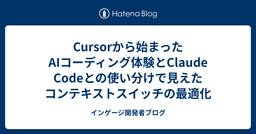

インゲージ開発者ブログ
https://blog.ingage.jp/
インゲージ開発者ブログ
フィード

Cursorから始まったAIコーディング体験とClaude Codeとの使い分けで見えたコンテキストスイッチの最適化 1
1
インゲージ開発者ブログ
こんにちは。毎日10km走っても痩せなくなり、最近は遂に太り始めたymd2です。 概要 4月からCursorを業務で使い始めて、先週からClaude Codeの利用を開始しました。両方を併用してみて分かった、それぞれの特徴と効果的な使い分けについて書いてみます。 ざっくり結論としては、CursorとClaude Codeは/ideで連携もできるため、どちらか一方を選ぶよりも、適材適所で使い分けることで開発効率を最大化できると感じています。 Cursorでの4ヶ月間の体験 最初の感動と日常化 VS Codeライクな操作感で導入しやすかった リアルタイムコード補完がとても快適！ Chat機能による…
3日前

どんな評価基準で、どこまで満たせばよいのか？を考える第一歩
インゲージ開発者ブログ
はじめに ソフトウェア開発において品質に関する議論を始めると、必ず話題になるのがこの問いです。 どんな評価基準で、どこまで満たせばよいのか？ 品質を担保するうえで必ずあがるこの問いに、明確な答えを出すにはさまざまな要素を加味して検討する必要があります。 ビジネス戦略との整合性 製品のコンセプト 利用者の特性 実際の利用シーン 競合との差別化ポイント ステークホルダーからの期待 開発体制や技術的制約 など、検討事項が多岐にわたるため手間と時間がかかるのが現実です。 結果として定義されないまま、あいまいな状態になってしまっている開発現場も少なくありません。 そこで今回は、最初の第一歩として評価基準…
12日前
メタ思考はスキルであり、習慣だった
インゲージ開発者ブログ
はじめに こんにちは！インゲージに入社して、もうすぐ1年が経とうとしているPMのgorugo0516です。 今回は、最近読んだとても面白い本について感想を書いていこうと思います。 この本を読むきっかけ 先日、外部のPMコーチの方との1on1の機会がありました。 そこで私は、「自分が目指したいPM像」と「現在感じている悩み」について率直に相談しました。 私が目指しているPMは、ユーザー自身もまだ気づいていない課題を見つけ出し、それを“使いたい”と思える形で提示・解決できるPMです。 また、仮説を自ら立て、検証・学習・改善のサイクルを主体的に回せるようになりたいと考えています。 一方で、現状は顧客…
16日前
AWSのイベント「Coding Agent at Loft」に登壇してきました！
インゲージ開発者ブログ
どうも、さまざまなAIサービスのサブスクのおかげで財布が薄くなっている @hansprocs です！😇 毎日のように新しいAIサービスやモデルの新バージョンが出たりして、いったいどんなサービスをどう使いこなせばいいんだろ、という疑問が止まりません。 費用はかかるものの、ちゃんと使いこなさないとオモチャに過ぎないものになってしまいがちですよね。 参加したイベント この度はAWS ジャパン合同会社主催のCoding Agent at Loftに参加してきました！ aws.amazon.com 生成AIツール3大将（と私が思っている）の一つであるClineと、AWSのAIサービスの主力であるBedr…
24日前
Rubyで楽しくアートコードを作ろう
インゲージ開発者ブログ
こんにちは。24年度新卒の ryoaio です。 1年が経ち、最近は興味のあったPdMとしても活動し始めております。 挑戦できる環境に感謝し、日々成長します🔥 弊社は 関西Ruby会議08 スポンサーです！！ 今年6/28(土)開催される関西Ruby会議08。 弊社ingageも協賛し、今年はブースも開きます！🙌 regional.rubykaigi.org 今年の関西Ruby会議のテーマは「Rubyと作ろう」 さて、ブースはどんな内容にしようかな。 せっかくエンジニアが集まるカンファレンス。エンジニアの方に興味を持っていただけるようにしたい。 ...ここで松山Ruby会議で魅了されたTRIC…
25日前
PostgreSQLでベクトル検索を極める：pgvectorの実力検証しながら、pgvectorscaleも気になるから見てみた件について
インゲージ開発者ブログ
こんにちは！2024年新卒入社のJinyangです。 時の流れは本当に早いもので、気づけば株式会社インゲージに入社してから一年が経ちました。今回でこのブログも三度目の投稿となります。 さて、今回のテーマは何にしようかと悩んでいたのですが、やはり「RAG（Retrieval-Augmented Generation）」について書くことにしました。 RAGといえば一時期大きな注目を集めましたが、最近では当たり前の技術として定着しつつありますね。特に今回注目したいのは、RAGの「Retrieve」部分、つまりナレッジベースからの効率的なドキュメント取得です。 現在、ベクトル検索（文章の意味や文脈の類…
1ヶ月前
RuboCop に興味が出たので Ast を眺めてみた
インゲージ開発者ブログ
こんにちは kk8511 です。 最近ふとRuboCopに興味が出たのでCopの実装方法を調べていました。 Development :: RuboCop Docs Ast を眺めただけで力尽きましたが備忘録として記載します。 AST RuboCop では Abstract Syntax Tree (AST) が利用されるので、まずruby-parseコマンドでサクッと AST を確認してみました。 値 値には型がつく。 % ruby-parse -e '1' (int 1) % ruby-parse -e '"hello"' (str "hello") % ruby-parse -e '[1,…
1ヶ月前
ワンライナーでよく使うコマンドラインオプション
インゲージ開発者ブログ
こんにちは、tsuka05です。ワンライナー書いていますか？ 今日はRubyでワンライナーを書くときによく使うコマンドラインオプションをいくつかご紹介します。 -e コマンドラインで直接スクリプトを指定します ruby -e 'puts "Hello, World."' Hello, World. -n ファイルや標準入力から1行ずつ読み込んで、与えられたスクリプトをループします。 読み込まれた内容は $_ に格納されます。 ruby -n -e 'puts $_' *.txt マッチしたファイルの内容を出力します -p -nに加えて、各ループの最後に $_ の内容を出力します。 ruby -…
1ヶ月前
未経験SRE大募集しています！！
インゲージ開発者ブログ
こんにちは、株式会社インゲージでSREを担当しているanecho108と申します。 この記事のタイトルだけを見ると信頼性に欠けるように感じるかもしれませんが、真面目に募集しています。 募集の背景 当社では、Re:lationというSaaSサービスのプロダクトを開発・運用しています。ありがたいことに、事業は順調に成長しており、それに伴ってインフラの複雑性や求められる品質も高まっています。これらのニーズに応えるため、SREチームの体制強化が急務となっています。 ingage.jp 将来的な拡張性や安定性を見据えた体制づくりの一環として、新たな仲間を募集しています。SRE未経験でも問題ありません。A…
2ヶ月前
星つきのメソッド？JavaScriptのGeneratorについて
インゲージ開発者ブログ
はじめに 普段はあまり見かけないですがたまにオープンソースのJavaScriptコードを読んでいると、以下のように*がついているものを見かけることがあります。 function *gen() { yield 1; yield 2; yield 3; } しかし、JSでは変数名に$と_以外の特殊文字は使用できません。 これは何をするものなのでしょう？ Generatorとは 直訳すると「生成機」になるGeneratorは、メソッドを 途中で止めることができる という特性を持っています。 一般的にJSでのメソッドは一度実行されるとreturnするまでにはすべての処理が動きます。 しかし、Gener…
2ヶ月前
集計データで日付の抜けを埋めるSQLテクニック
インゲージ開発者ブログ
SQLで日別のイベントデータを集計するときに、もとのレコード自体がなかった日が出力結果から抜けてしまってわかりにくいときありますよね。そんなときに、抜けた日付を埋めて出力するテクニックをご紹介。
2ヶ月前
手動リリースノート作成からの解放：3つのGitHub Actionsで叶えた自動化
インゲージ開発者ブログ
はじめに こんにちは、フロントエンドエンジニアのraraya99です。 今回のブログは社内向けのリリースノート作りをGithub Actionsで自動化した話をまとめました🚀 🚀 弊社ではリリースごとに GitHub の「マイルストーン」（以下「Milestone」）をリリースノートとして運用してきました。 Milestone は PR（プルリクエスト）をまとめて管理でき、リリース予定の未マージ PR にも気づきやすく便利です。そのため、GitHub の正式なリリースノート機能（以下「Release」）は使わず、Milestone のみで完結させていました。 🛠 現状の問題点 下記のようにMi…
2ヶ月前
メールヘッダを分析する
インゲージ開発者ブログ
id:kizashi1122 です。 弊社はメールやチャットを一元的に管理し、チームで対応できるサービスである Re:lation を開発・提供しています。 メールは基本的には送ったらすぐに相手に届きます（正確には相手のサーバーに届く） 。 しかしなかなか届かない場合もあります。もともと非同期な仕組みではあるし、相手はメールを読み出して即時に返事を返すものでもないので、あまり気にならないと言えば気にならないです。 とは言え、サービスを提供する側としては、どこで遅延したのかは気になりますし、実際お客様からお問い合わせをいただくこともあります。 そこで、 Re:lation に届く前にすでに遅れて…
3ヶ月前
Windows ストレージセンサーが機能しない
インゲージ開発者ブログ
お久しぶりの masm11 です。 ディスクの整理、してますか？ 不要なファイルをいつまでもデスクトップやダウンロードフォルダに置いたままになっていませんか？ そんな手間な… そんな時には自動化です。 Windows は自動でダウンロードフォルダの古いファイルを削除することができます。 そう、ストレージセンサーですね。 しかし、これがまた、ちょっとした設定が必要でして… 今回はそんなお話です。 ストレージセンサーを設定する もちろん、ちゃんと設定画面が存在します。設定していきましょう。 設定を開き、システム → ストレージと遷移すると、ストレージセンサーがありますので、 スイッチを ON にし…
3ヶ月前
ステークホルダーからの理解できないフィードバックにどう向き合うか
インゲージ開発者ブログ
どうも @shutooike です。 スプリントレビューなどでステークホルダーがくれるフィードバックはとても有難いです。というか、これを貰うためにスクラムをやっています。 一方で、POやエンジニアから見ると筋が悪いように思えたり、意図が理解できないフィードバックをもらうこともあります。 理解できないフィードバックにどう向き合えば良いのかについて、実際に起きた出来事を交えて社内の数人とディスカッションしました。その時の結論をメモがてら残しておきます。 良い向き合い方 結論、弊社の3つバリュー「誠心誠意」「本質追求」「想像凌駕」に沿って行動すると良いのでは？となりました。それぞれ簡単にまとめます。…
3ヶ月前
iCloudカスタムメールドメインを設定する
インゲージ開発者ブログ
こんにちは。Tedです。 iCloudカスタムメールアドレスって知ってますか？自身で取得したドメインを用いてメールアドレスが持てるようになるものです。 ドメインは お名前.com などドメインレジストラにて取得できます。この独自ドメイン、一般的にはWebサイトのURLに使うために取得されることが多いかと思います。 独自ドメインをメールアドレスに使うには、これまでは 1)メールサーバーを独自に立ち上げる 2)Google Workspaceを利用する 3)独自ドメインを使えるメールサービスを利用する といったことが挙げられます。iCloudカスタムメールアドレスは、iCloud+に加入していれば…
3ヶ月前
楽しく振り返る新しい方法
インゲージ開発者ブログ
こんにちは！UI/UXデザイナーのYOROです！ 弊社ではスクラムという手法で開発を進めており、定期的に「振り返り」の時間を取っています。 でも最近「振り返りたいことがない…」「いつもどうやって振り返りしていたっけ？」と、なんだかマンネリ気味になっていました🥹 そこで！ 「もっと楽しく！ワクワクする振り返りができないか？」と考えた結果... スプリントを冒険に見立てた振り返りフレームワーク「冒険の振り返り」 を作ってみました🎉✨ 冒険の振り返りとは？ ①冒険のはじまり（スプリントゴール） ②冒険の道のり（まもの） ③ボス（最大の課題） ④レベルアップ（経験値） ⑤次の冒険に向けて（挑戦） 最も…
3ヶ月前
Flutterのコード可読性を上げる取り組み
インゲージ開発者ブログ
昨年末よりモバイル開発に携わるようになったHaraShoです。 Flutterでモバイル開発を進める中で、コードの可読性を向上させるためにいくつかの工夫を行いました。 本記事では、それらの取り組みについて紹介します。 Android Studioの設定 まず、開発環境であるAndroid Studioの設定を見直しました。 保存時に dart format が実行されるように設定 まずはコードスタイルを合わせるため、自動的にFormatが行われるよう設定しました。 Settings > Languages & Frameworks > Flutter > Format code on save…
4ヶ月前
PostgreSQL で JSON 型データを条件に検索するには？
インゲージ開発者ブログ
人の世を作ったものは神でもなければ鬼でもない。やはり向う三軒両隣にちらちらするただの人である。 夏目漱石「草枕」より こんにちは、勤め人なのに昼夜逆転と寝不足で自立神経が整わない hikaru-kimi です！ 弊社のような自社サービスを運営している企業ですと、不具合調査や動作検証のためにデータベースを操作することもままあります O/Rマッパー（Rails で言えば ActiveRecord）で手軽にデータを確認することもありますが、環境によってはSQLを用いて直接データベースを調査する場面もあります テーブルのカラムによっては JSON 型を採用しているものもありますが、JSON の中身を条…
4ヶ月前
「rebase派」だった僕が転職後に「merge派」に変わった話
インゲージ開発者ブログ
はじめに 最近!?入社しました（40分未満の運動は何も意味がないと考える）体育会系プログラマのymd2です！ これまではSIerやSESのようなお客様を支援する形での業態が主だったので、初めて自社サービスでワクワクしております！ さて、転職前後でたくさんの変化がありましたが、その中でも個人的に一番予想外だったのは、私のプルリクエストのマージ教がrebase主義派からmerge主義派に変わったこと。 「developの差分、トピックブランチにmergeで取り込めばいいじゃん。え？rebaseしたい？何で意味わからない？」って言われるアレです。 トピックブランチをカジュアルにrebaseしちゃって…
4ヶ月前
モバイルアプリのE2E自動テスト導入：ツール選定〜インストール編
インゲージ開発者ブログ
はじめに 弊社ではモバイルアプリの開発を行っており、より安心してリリースできるようE2E自動テスト導入を検討しています。 検討に際して調査を行いましたので、調査内容のまとめを記載します。 ※アカウントの関係上、iOSの方がインストールできなかったため、当記事の対象はAndroidのみとなります(iOSについては別の機会に記載したいと思います)。 ツールの選定 E2E自動テストツール 今回のツール選定の必須要件として「無償であること」が第一に挙げられます。 この時点で選択肢が大幅に絞り込まれますが、最もよく使われているツールということで、Appiumを使用することにしました。 Appium使用に…
4ヶ月前
バックログ管理迷子からの脱却！ユーザーストーリーマッピングを試してみた
インゲージ開発者ブログ
はじめに こんにちは、PMの@gorugo0516です。 PMになってから半年が経ち、少しずつ業務に慣れてきましたが、まだまだ試行錯誤の毎日です。 特に頭を悩ませているのが バックログ管理。 「優先順位ってどう決めるのが正解？」 「スプレッドシートで管理してるけど、全体像がつかめない…」 こんなモヤモヤを抱えながら、いろいろ試してきました。 今回のブログでは、私がバックログ管理を改善するために取り組んだこと、 そして ユーザーストーリーマッピング を使い始めた話をまとめます。 1.バックログ管理の試行錯誤 ツールでの管理 最初は、チームで使っているタスク管理ツールをそのままバックログ管理にも活…
4ヶ月前
RSpecで時間を操作してテストする
インゲージ開発者ブログ
こんにちは。24年度新卒の ryoaio です。 私の所属するチームは2024年7月に立ち上がり、この半年で体制やメンバーを変えつつ、経験を積みながら形成してきました。 半年はあっという間ですね...! 今年も多くのことを経験し、個人としてもチームとしても強くなっていきます💪 さて、本日は、最近触ったRSpecの時間の操作に関してまとめたいと思います。 RSpecで時間操作をすることになったきっかけ 「start_time ~ end_timeまでの期間を指定して情報を取得するようなGETメソッドにて、end_timeが現在時間よりも未来を指していた場合、未来のデータが仮にあったとしても、現在…
5ヶ月前
Githubレポジトリのソースコードを全部Graph Databaseに突っ込んでみた
インゲージ開発者ブログ
こんにちは。24新卒のjinyangです。 2回目のブログ執筆となりますが、最近はチーム内で最近話題のRAGについて取り組んでいることもあって、もっぱら生成AI周りを調査したり遊んだりしている今頃です。 とりわけ、最近はMicrosoftが提唱したGraph RAGという手法に熱い関心を抱いております。Graph RAGは、従来のRAGの欠点を克服できる可能性があるアプローチで、情報を取得・処理する際にGraph Databaseを活用するのが特徴です。Graph Databaseとは、データをノード（点）とエッジ（線）で構造化して表現するデータベースのことで、関係性を重視したデータの検索や推…
5ヶ月前
Ruby の Array クラスのメソッドを眺めてみた
インゲージ開発者ブログ
こんにちは kk8511 です。 インゲージ入社してから Ruby を実務で使いはじめて8ヶ月目となり、慣れてはきたけれど、まだまだ知らないことだらけの今日この頃、 基本は大事ということで Array クラスのメソッドをあらためて眺めてみて気になったメソッドの雑感などを記そうかと思います。 お時間のある方はお付き合いください。 docs.ruby-lang.org 気になったメソッド [] https://docs.ruby-lang.org/ja/latest/class/Array.html#I_--5B--5D 今更ですが範囲指定の仕様をちゃんと把握していなかった。 a = [ "a",…
5ヶ月前
Ruby3.4のit
インゲージ開発者ブログ
こんにちはtsuka05です。 Ruby3.4 からブロックパラメーター it が入りました。 こんな風に使えます。 [1, 2, 3].map{ it * 2 } # [2, 4, 6] 他の言語にも同様のものがあるのでいくつか調べてみました。 Groovy itが使えます。itといえばGroovyのイメージでした。 [1, 2, 3].collect{ it * 2 } // [2, 4, 6] Kotlin こちらもitが使えます。 arrayOf(1, 2, 3).map{ it * 2 } // [2, 4, 6] Scala _ が使えます。Scalaは _ にいろんな用途があるな…
5ヶ月前
Organizations組織離脱と新組織加入の手順・注意点
インゲージ開発者ブログ
年末に体調を壊して１週間ほど入院していたSREチームのanecho108と申します。 インフルエンザも流行っていますので今後も体調には気を付けたいですね。 はじめに 今回は、下記の図のようにOrganizations組織のメンバーアカウントを別AWSアカウントのOrganizations組織に加入させたいと思います。実施する機会も少ないと思いますので、その際の手順と注意点を備忘録としてまとめたいと思います。なお、元の組織はControll Towerを利用していません。新組織では利用しています。 目次 はじめに 目次 事前準備 スタンドアロンになるとコストと使用状況のデータにはアクセスできない…
6ヶ月前
2024年の学び
インゲージ開発者ブログ
どうも @shutooike です。 2024年もチームと個人の学びを雑に残しておきます。 来年の自分忘れんなよ^_^ 今年の挑戦 採用へのコミット 1つのプロダクトへの長期間のコミット コミュニティへの会場提供 チームの学び ストーリーポイントが不要になった まあ大体こんなもんでしょうで見積もれるように 1.5年ぐらい同じチームでやった経験から来るもの あと多少ストレッチな目標でも立ち向かいやすくなった 数値になっていると最初から無理だと決めつけてしまう 優秀な2-3人の開発者が最強 3人までだと互いの手を握れる人数（コミュニケーションパス3） 4人以上になると途端に把握するための工数、管理…
6ヶ月前
社内部活、日本酒会のアプリを作ってみた！
インゲージ開発者ブログ
どうも！新卒エンジニアとしての初めての一年の終わりを迎えつつある@hansprocsです！ 一年前と比べるといろいろできるようになったことが増えて次の一年が楽しみですね~ さて、インゲージには様々な部活があり、その中の一つが日本酒会です。 部活といって特別なことをしているわけではなく、ただただ有志で集まっていい日本酒と食べ物を食べる会です。 今回はこの日本酒会のためのアプリを作りましたので、ご紹介したいと思います！ 背景 飲んで食べるだけなのにアプリって必要なん？ 皆さんは好きな日本酒がありますか？ 私は日本酒は好きですが、特定の日本酒が好きなわけではありません。 そのため、お店で日本酒を注文…
6ヶ月前
フロントエンドのビルドってなに？
インゲージ開発者ブログ
目次 目次 はじめに ビルド is 何？ ブラウザが読み込めるのはHTML、CSS、JavaScript デベロッパーツールで違いを見てみる 最後に 参考 はじめに 最近仕事後はovercooked 2で遊んでいる fujimmm331 です。 フロントエンドの開発では、npm run dev のコマンドを実行すると、開発環境としてアプリケーションがブラウザに表示されますよね。 一方、 package.json の scripts を見ると、 build というスクリプトも定義されており、 npm run build のコマンドを実行することもできます。 これらの違いは一体なんでしょうか？ 本…
6ヶ月前